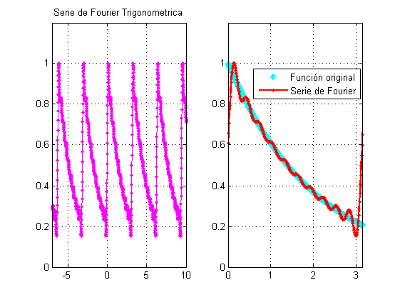
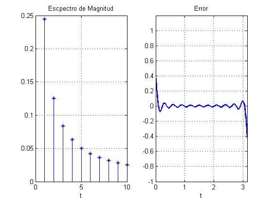
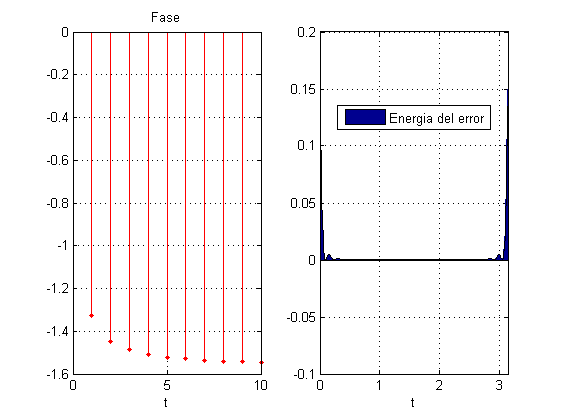

function eje1()
dt=10e-3;
T=pi;
A=1;
w=2;
N=10;
t= -5*T:dt:5*T;
f_t=exp(-t/2);
mag(1)=0;
fase(1)=0;
a0=0.504;
sf=0;
for n=1:N
bn=(0.504)*((8.*n)/(1+(16.*n.^2)));
an=(0.504)*(2/(1+(16.*n.^2)));
sf=sf+(an*cos(n*w*t))+(bn*sin(n*w*t));
mag(n)=sqrt(an^2+bn^2);
fase(n)=-atan(bn/an);
end;
sf=sf+a0;
figure (1)
subplot(1,2,1)
plot(t,sf,'m .-')
axis([-7 10 0 1.2]);
grid on;
title('Serie de Fourier Trigonometrica')
hold on;
subplot(1,2,2)
plot(t,f_t,'c *','LineWidth',2)
grid on;
hold on;
plot(t,sf,'r.-','linewidth',2.)
legend('Función original','Serie de Fourier ','Location','best' )
axis([0 pi 0 1.2]);
figure(2)
subplot(1,2,1)
stem(1:N,mag,'* b')
grid on;
xlabel('t')
title('Escpectro de Magnitud')
subplot(1,2,2)
e1=f_t-sf;
plot(t,e1,'LineWidth',2)
title('Error')
xlabel('t')
axis([0 pi -1 1.2]);
grid on
figure(3)
subplot(1,2,1)
stem(1:N,fase,'r .-')
grid on;
xlabel('t')
title('Fase')
subplot(1,2,2)
e1=f_t-sf;
area(t,e1.^2)
legend('Energia del error','Location','Best')
xlabel('t')
axis([0 pi -0.1 0.2]);
grid on
end
  